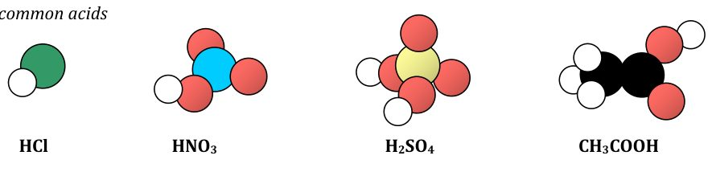
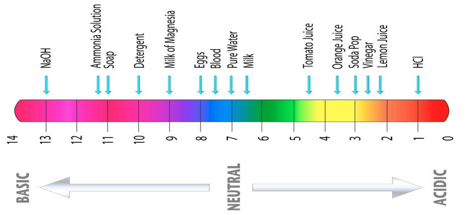
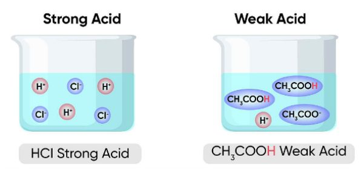
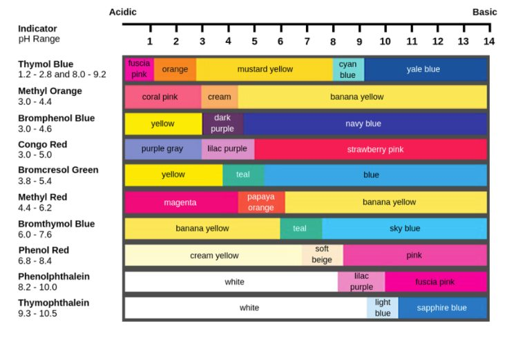
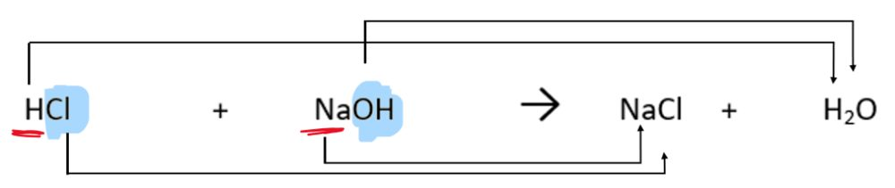
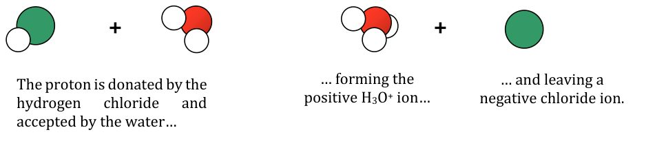
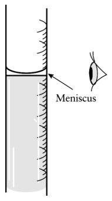
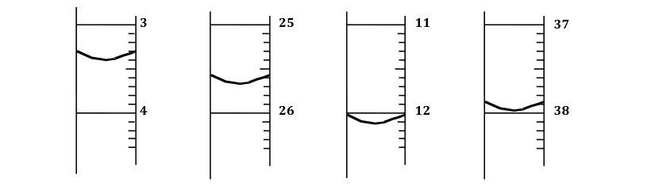
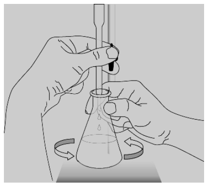

3.1 Acids and Bases
Many acids and bases are found around the home. We use the Brønsted–Lowry theory: acids are proton (H+) donors and bases are proton acceptors. Water is the solvent in which acid–base reactions happen.
Acids
An acid produces hydrogen ions (H+) when it dissolves in water, so every acid contains hydrogen that can be released as an ion.
| Common acid | Formula | Uses / sources |
|---|---|---|
| Hydrochloric acid | HCl | Stomach acid; cleaning bricks and concrete |
| Sulfuric acid | H2SO4 | Car batteries; making fertilisers |
| Nitric acid | HNO3 | Fertilisers; explosives |
| Phosphoric acid | H3PO4 | Cola drinks; rust removers; fertilisers |
| Carbonic acid | H2CO3 | Weak acid in fizzy drinks |
| Ethanoic (acetic) acid | CH3COOH | Vinegar |

- Acids taste . (It is too dangerous to taste unknown liquids to find out!)
- Acids turn blue litmus .
- Acids have a pH .
- Acids are corrosive.
- They react with bases to produce a and .
Bases and alkalis
Bases are the chemical opposite of acids. They are proton acceptors and form hydroxide ions (OH−) in solution. Many bases simply contain hydroxide ions and release them when they dissolve; others (oxides, carbonates, ammonia) react with water to produce hydroxide ions, e.g.
Bases are often solids, but those that dissolve in water form solutions called alkalis. Alkalis are in kitchen cleaners such as oven spray, floor cleaner and dishwasher detergent. Alkalis are soluble bases: a subset of all bases.
| Common alkali / base | Formula | Uses / sources |
|---|---|---|
| Sodium hydroxide | NaOH | Oven and drain cleaners; soap making |
| Magnesium hydroxide | Mg(OH)2 | Antacids (milk of magnesia) |
| Sodium carbonate | Na2CO3 | Washing soda; glass making |
| Ammonia | NH3 | Window and floor cleaners; fertilisers |
| Sodium hydrogen carbonate | NaHCO3 | Baking soda; antacids |
- Alkalis taste .
- Alkalis turn red litmus .
- Alkalis have a pH than 7.
- Alkalis are corrosive and caustic.
- They have a feel.
- They react with acids, forming a and .
3.2 The pH Scale
The pH scale shows whether a solution is acidic or alkaline. It runs from 0 to 14.

- Neutral solutions measure pH , the middle of the scale.
- Strong acids measure about pH 0–2.
- acids are in the range pH 3–4.
- acids are in the range pH 5–6.
- alkalis measure about pH 12–14.
- Moderate alkalis are in the range pH 10–11; weak alkalis pH 8–9.
The strength of an acid depends on how many of its molecules release hydrogen ions. In a strong acid, almost all the molecules release H+ (e.g. nitric, hydrochloric and sulfuric acids). In a weak acid, only a few do (e.g. acetic acid, in vinegar).

pH indicators
Plant dyes that change colour in acidic or alkaline solutions are called indicators. Litmus, extracted from lichens, shows whether a solution is acidic or alkaline. pH meters measure pH electronically.
Plant dyes that change colour in acids or alkalis are called .
Acid–base indicators change colour over a narrow pH range, giving chemists an easy way to detect acidity or basicity.
| Indicator | Colour at low pH | pH range | Colour at high pH |
|---|---|---|---|
| Methyl violet | Yellow | 0.0–1.6 | Blue |
| Methyl orange | Red | 3.2–4.4 | Yellow |
| Bromophenol blue | Yellow | 2.8–4.6 | Blue |
| Bromocresol green | Yellow | 3.8–5.4 | Blue |
| Methyl red | Red | 4.2–6.3 | Yellow |
| Phenolphthalein | Colourless | 8.2–10.0 | Pink / violet |
| Alizarin yellow | Yellow | 10.1–13.0 | Orange |

What colour is each indicator at the given pH?
| Indicator | pH | Colour |
|---|---|---|
| Methyl violet | 2.5 | |
| Methyl orange | 6.4 | |
| Bromophenol blue | 1.5 | |
| Bromocresol green | 7.0 | |
| Methyl red | 4.0 | |
| Phenolphthalein | 13.4 | |
| Alizarin yellow | 9.5 |
Below an indicator's range it shows its low-pH colour; above the range, its high-pH colour.
Use both indicator results to narrow down the pH.
| Indicator 1 | Indicator 2 | pH range |
|---|---|---|
| Bromocresol green: blue | Phenolphthalein: colourless | 5.4 – 8.2 |
| Methyl violet: blue | Methyl orange: red | |
| Phenolphthalein: colourless | Methyl red: yellow | |
| Phenolphthalein: pink | Alizarin yellow: orange | |
| Methyl orange: yellow | Methyl red: yellow |
Universal indicator
Universal indicator is a blend of many dyes that changes through a range of colours across the whole pH scale, so it shows the approximate pH value. Universal indicator paper is a convenient way to measure pH.
Classify each substance.
| Substance | pH | Acid or base? | Strength |
|---|---|---|---|
| Sulfuric acid (car battery acid) | 1 | ||
| Distilled water, saliva | 7 | ||
| Concentrated sodium hydroxide (caustic soda) | 14 | ||
| Black coffee | 5 | ||
| Coca-Cola | 3 | ||
| Ammonia | 12 | ||
| Tomatoes, grapes, apple juice | 4 | ||
| Sodium bicarbonate | 8 | ||
| Toothpaste | 9 | ||
| Stomach acid | 2 | ||
| Oven cleaner | 13 | ||
| Dishwashing detergent | 12 |
The booklet also lists tap water (pH 6) and sea water (pH 6), both weak acids at those values. Real sea water is slightly alkaline, about pH 8.1.
3.3 Chemical Reactions of Acids
When acids and bases are mixed they neutralise each other. Neutralisation always produces an ionic salt and water. A salt is an ionic compound formed from the neutralisation of an acid and a base.

| Acid | Salt name | Example |
|---|---|---|
| Sulfuric acid | …sulfate | H2SO4 + 2NaOH → Na2SO4 + 2H2O |
| Hydrochloric acid | …chloride | HCl + NaOH → NaCl + H2O |
| Nitric acid | …nitrate | 2HNO3 + Ca(OH)2 → Ca(NO3)2 + 2H2O |
| Phosphoric acid | …phosphate | 2H3PO4 + 3Mg(OH)2 → Mg3(PO4)2 + 6H2O |
- HNO3 + KOH → +
- H2SO4 + Ca(OH)2 → + 2H2O
Type formulas without subscripts, e.g. KNO3. Formulas are case-sensitive.
Six types of acid reaction
Acids react in a few predictable ways. Common products are a salt and water, with carbonates also producing carbon dioxide.
| Reaction | Example |
|---|---|
| 1. Acid + metal → salt + hydrogen | 2HCl + Mg → MgCl2 + H2 |
| 2. Acid + metal oxide → salt + water | H2SO4 + CaO → CaSO4 + H2O |
| 3. Acid + metal hydroxide → salt + water | 2HCl + Mg(OH)2 → MgCl2 + 2H2O |
| 4. Acid + metal carbonate → salt + water + carbon dioxide | H2SO4 + ZnCO3 → ZnSO4 + H2O + CO2 |
| 5. Acid + metal hydrogen carbonate → salt + water + carbon dioxide | H2SO4 + 2NaHCO3 → Na2SO4 + 2H2O + 2CO2 |
| 6. Acid + ammonia solution → ammonium salt + water | HCl + NH4OH → NH4Cl + H2O |
Write the products and balance: H2SO4 + Cu; HCl + Li2O; HNO3 + Ca(OH)2; HNO3 + K2CO3; HCl + NaHCO3; HNO3 + NH4OH.
H₂SO₄ + Cu → no reaction: copper is below hydrogen in the reactivity series, so it doesn't react with dilute acids. (The booklet sets this as a gap; the expected pattern would be CuSO₄ + H₂.)
2HCl + Li₂O → 2LiCl + H₂O
2HNO₃ + Ca(OH)₂ → Ca(NO₃)₂ + 2H₂O
2HNO₃ + K₂CO₃ → 2KNO₃ + H₂O + CO₂
HCl + NaHCO₃ → NaCl + H₂O + CO₂
HNO₃ + NH₄OH → NH₄NO₃ + H₂O
Practice exercise
Write the products and balance:
2HCl + K2O; HNO3 + Na2O; H2SO4 + CaO; HCl + MgO; HCl + KOH; H2SO4 + Ca(OH)2; HNO3 + Zn(OH)2; H2SO4 + LiOH
2HCl + K₂O → 2KCl + H₂O
2HNO₃ + Na₂O → 2NaNO₃ + H₂O
H₂SO₄ + CaO → CaSO₄ + H₂O
2HCl + MgO → MgCl₂ + H₂O
HCl + KOH → KCl + H₂O
H₂SO₄ + Ca(OH)₂ → CaSO₄ + 2H₂O
2HNO₃ + Zn(OH)₂ → Zn(NO₃)₂ + 2H₂O
H₂SO₄ + 2LiOH → Li₂SO₄ + 2H₂O
Write the products and balance:
HCl + K2CO3; HNO3 + Na2CO3; H2SO4 + CuCO3; HCl + ZnCO3; HCl + KHCO3; H2SO4 + Ca(HCO3)2; HNO3 + Cu(HCO3)2; H2SO4 + LiHCO3
2HCl + K₂CO₃ → 2KCl + H₂O + CO₂
2HNO₃ + Na₂CO₃ → 2NaNO₃ + H₂O + CO₂
H₂SO₄ + CuCO₃ → CuSO₄ + H₂O + CO₂
2HCl + ZnCO₃ → ZnCl₂ + H₂O + CO₂
HCl + KHCO₃ → KCl + H₂O + CO₂
H₂SO₄ + Ca(HCO₃)₂ → CaSO₄ + 2H₂O + 2CO₂
2HNO₃ + Cu(HCO₃)₂ → Cu(NO₃)₂ + 2H₂O + 2CO₂
H₂SO₄ + 2LiHCO₃ → Li₂SO₄ + 2H₂O + 2CO₂
Write the products and balance: HCl + Mg; H2SO4 + Cu; H2SO4 + Fe; HNO3 + Al
2HCl + Mg → MgCl₂ + H₂
H₂SO₄ + Cu → no reaction (copper is below hydrogen)
H₂SO₄ + Fe → FeSO₄ + H₂
6HNO₃ + 2Al → 2Al(NO₃)₃ + 3H₂
Type each formula without subscripts (case-sensitive).
| Reaction | Acid | Base | Salt |
|---|---|---|---|
| NaOH + HCl → NaCl + H2O | |||
| HCl + KOH → KCl + H2O | |||
| Ca(OH)2 + HNO3 → H2O + Ca(NO3)2 | |||
| H3PO4 + KOH → K3PO4 + H2O | |||
| H2SO4 + NaOH → Na2SO4 + H2O |
The booklet's last example, HCl + Fe → FeCl₃ + H₂, has no base: iron is a metal. (Iron and hydrochloric acid actually form iron(II) chloride: Fe + 2HCl → FeCl₂ + H₂.)
What happens when an acid reacts?
Properties help us identify acids and bases, but a theory explains what happens when they react. Acids dissolve in water to produce H+ ions: they donate H+ ions (protons). That is why all acids contain hydrogen (H2SO4, HCl, HNO3). Acid–base reactions involve a transfer of hydrogen ions: the acid donates them and the base accepts them.

In HCl + H2O → H3O+ + Cl−, which substance acts as the base?
Water accepts the proton (H⁺) donated by HCl, so water is acting as the base.
3.4 Practical 2: The Chemistry of Household Cleaners
Household cleaners fall into three types: basic (alkaline) cleaners for grease and dirt (e.g. floors); bleaches/antibacterial cleaners for showers, baths and toilets; and combination cleaners with both properties. Bleach doesn't react with acid, but basic solutions do, so adding acid lets us compare their basic strength. Methyl orange indicator is pale yellow in base and turns red/pink in acid.
Equipment: 25 mL measuring cylinder, burette, 0.1 M HCl, household cleaner solutions, 3 conical flasks, methyl orange, 250 mL beaker, funnel.
A burette measures the volume of liquid delivered precisely. Its scale reads from the top down: read it before and after, and subtract. Read the bottom of the meniscus at eye level to avoid parallax error.


Read each of the four burettes above to two decimal places.
Approximately: 3.40 mL, 25.65 mL, 12.10 mL, 37.95 mL (read the bottom of the meniscus; each small division is 0.1 mL, so estimate the second decimal place).
Procedure:
- Measure 20 mL of a cleaner into a conical flask.
- Add 2–3 drops of methyl orange.
- Using a funnel, fill the burette with HCl; remove the funnel and record the initial reading.
- Position the burette tip slightly inside the flask.
- Swirling the flask, slowly add HCl until the indicator permanently turns pink: the acid is now in excess. Go carefully to use the minimum amount.
- Record the final reading and the volume of HCl added (final − initial). Multiply by any dilution factor.
- Repeat for the other cleaners (e.g. Handy Andy, Clorox, Cloudy Ammonia, Coles Lavender Disinfectant, Nifty).

- Why is an acid–base indicator used?
- Why must the solution be swirled while adding the acid?
- Which cleaners are the basic type?
- Which basic cleaners have the greatest concentration, and how was this determined?
- Write a conclusion.
- To show the end point: the colour change shows exactly when all the base has been neutralised.
- To mix the acid through the whole solution, so it reacts evenly and the colour change isn't reached too early (or overshot).
- Results vary; cleaners that needed acid to change the indicator (e.g. Cloudy Ammonia, Handy Andy) are basic. Bleaches such as Clorox don't react with acid.
- The cleaner that needed the largest total volume of HCl (after multiplying by the dilution factor) to neutralise it has the greatest concentration of base.
- E.g. "The basic cleaners were ranked by the volume of 0.1 M HCl needed to neutralise 20 mL of each. The cleaner needing the most acid was the most concentrated base; bleach-type cleaners didn't react."
3.5 Test Your Understanding: Acids and Bases
- Define: a. acid; b. base.
- These acids are found in living things. Outline why each is important: a. nucleic acid; b. amino acid; c. hydrochloric acid; d. uric acid.
- a. An acid is a proton (H⁺) donor: it produces H⁺ ions in water. b. A base is a proton acceptor: in water it produces OH⁻ ions.
- a. Nucleic acids (DNA, RNA) carry genetic information. b. Amino acids are the building blocks of proteins. c. Hydrochloric acid in the stomach helps digest food and kills pathogens. d. Uric acid is a nitrogenous waste removed from the body in urine.
List 3 properties of acids and 3 properties of bases.
Acids: taste sour; turn blue litmus red; pH below 7; corrosive; react with metals to give hydrogen; neutralise bases. Bases/alkalis: taste bitter; turn red litmus blue; pH above 7; feel soapy/slippery; caustic; neutralise acids.
Predict the colour of litmus paper in:
- washing powder:
- orange juice:
- lemonade:
- a (basic) cleaner:
Why is universal indicator more useful than litmus?
Litmus only shows whether a solution is acidic or basic. Universal indicator changes through many colours, so it shows the approximate pH, i.e. how strongly acidic or basic the solution is.
Using the indicator colour chart:
- Methyl orange:
- Thymol blue:
- Phenolphthalein:
- Congo red:
At pH 4, methyl orange is in its transition range (3.0–4.4), so it is an in-between orange colour.
What is the difference between a strong acid like HCl and a weak acid like acetic acid?
In a strong acid, almost all the molecules release (ionise to give) H⁺ ions. In a weak acid, only a small fraction of molecules release H⁺ ions.
- Pb:
- NaCl:
- Na2CO3:
- H2SO4:
Determine the products and write balanced equations:
- zinc + hydrochloric acid
- sodium carbonate + sulfuric acid
- potassium hydroxide + nitric acid
- lithium hydrogen carbonate + hydrochloric acid
- zinc chloride + hydrogen: Zn + 2HCl → ZnCl₂ + H₂
- sodium sulfate + water + carbon dioxide: Na₂CO₃ + H₂SO₄ → Na₂SO₄ + H₂O + CO₂
- potassium nitrate + water: KOH + HNO₃ → KNO₃ + H₂O
- lithium chloride + water + carbon dioxide: LiHCO₃ + HCl → LiCl + H₂O + CO₂
- The two products of a neutralisation reaction are a and .
- carbon dioxide + water →
Explain how the acidity of the oceans would be affected if atmospheric carbon dioxide levels continued to increase.
More CO₂ would dissolve in the oceans, forming more carbonic acid, so the oceans would become more acidic (lower pH): ocean acidification. This makes it harder for corals and shellfish to build their calcium carbonate shells and skeletons.
A student mixed up the labels on three colourless solutions: sodium carbonate, sodium chloride and sodium hydroxide. Explain what tests would identify each.
Test the pH with universal indicator: sodium chloride is neutral (pH 7); the other two are alkaline (sodium hydroxide strongly, about pH 13–14; sodium carbonate less, about pH 11). Then add dilute hydrochloric acid: sodium carbonate fizzes, giving CO₂ that turns limewater milky; sodium hydroxide doesn't fizz. (You can confirm sodium chloride with nitric acid and silver nitrate: white precipitate.)
Explain how antacids work to relieve heartburn.
Heartburn is caused by excess stomach acid (HCl). Antacids contain weak bases (e.g. magnesium hydroxide, calcium carbonate, sodium hydrogen carbonate) that neutralise the excess acid, forming a salt and water (and CO₂ for carbonates), raising the pH.
Analyse: phosphoric acid + aluminium → aluminium phosphate + hydrogen gas
- What are the reactants? b. What are the products? c. Write a balanced equation (phosphoric acid = H3PO4). d. Name the salt. e. What type of reaction is this?
- Phosphoric acid and aluminium. b. Aluminium phosphate and hydrogen gas. c. 2H₃PO₄ + 2Al → 2AlPO₄ + 3H₂. d. Aluminium phosphate. e. An acid + metal reaction (a redox reaction: the metal displaces hydrogen).